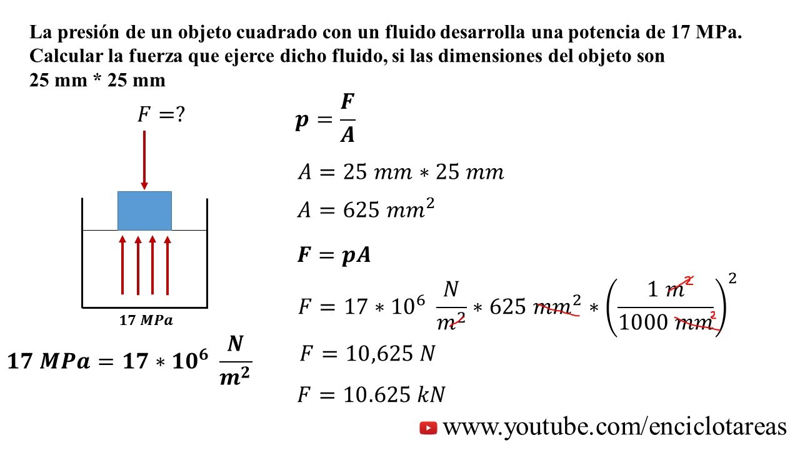
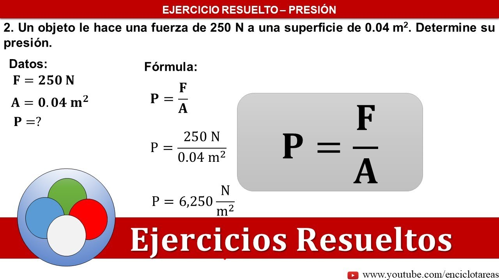

Presion
La presión es una magnitud física fundamental que describe la fuerza ejercida sobre una unidad de área. Es una propiedad esencial en física, ingeniería, meteorología y muchas otras disciplinas, y desempeña un papel crucial en una amplia gama de fenómenos naturales y artificiales. Comprender la presión y su aplicación en diferentes contextos nos permite analizar y predecir el comportamiento de gases, líquidos y sólidos en diversas situaciones.
La presión se define como la fuerza aplicada perpendicularmente sobre una superficie dividida por el área sobre la cual actúa. Matemáticamente, se expresa como la fuerza (F) dividida por el área (A): presión = fuerza / área. En el Sistema Internacional de Unidades (SI), la unidad de presión es el pascal (Pa), que es equivalente a un newton por metro cuadrado (N/m²).
La presión se manifiesta de diversas formas en la naturaleza y en la ingeniería. Por ejemplo, en la atmósfera terrestre, la presión atmosférica disminuye con la altitud debido al peso del aire sobre la superficie de la Tierra. En la hidrostática, la presión hidrostática aumenta con la profundidad en un fluido debido al peso de la columna de líquido sobre un punto dado.
La presión también desempeña un papel importante en la ingeniería y la tecnología. En la industria, se utiliza para medir la eficiencia y el rendimiento de dispositivos como motores y bombas. En la aviación, la presión aerodinámica es crucial para el diseño y la operación de aeronaves, especialmente durante el despegue y el aterrizaje.
Además, la presión se utiliza en numerosas aplicaciones cotidianas, como la cocina (donde se utiliza en ollas a presión para acelerar la cocción) y la medicina (donde se mide la presión arterial para evaluar la salud cardiovascular).
En conclusión, la presión es una propiedad física fundamental que desempeña un papel crucial en una amplia variedad de fenómenos y aplicaciones en la ciencia, la ingeniería y la vida cotidiana. Su estudio nos permite comprender y predecir el comportamiento de los materiales y sustancias en diferentes contextos, desde la atmósfera terrestre hasta la operación de dispositivos tecnológicos. La comprensión de la presión es esencial para el desarrollo de tecnologías avanzadas, la gestión de recursos naturales y la mejora de la calidad de vida.
Ejercicios
